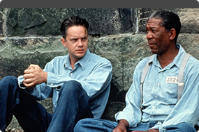
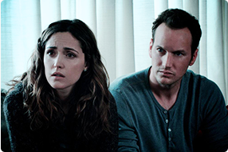
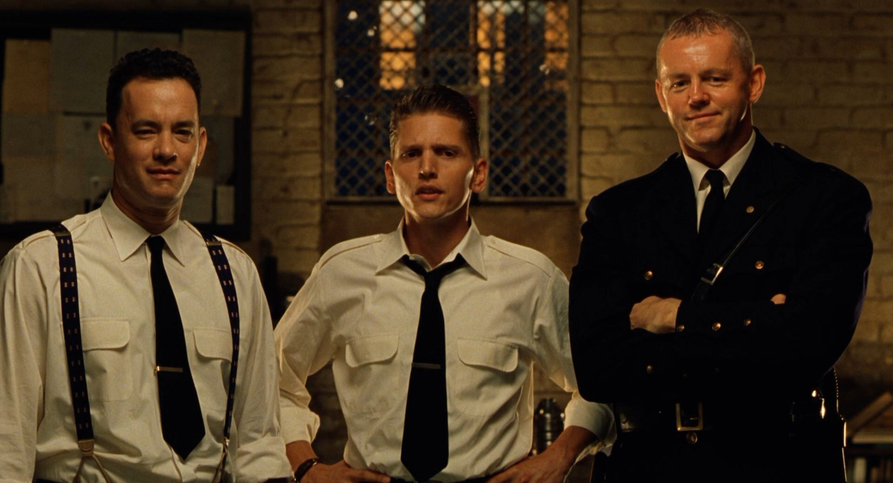
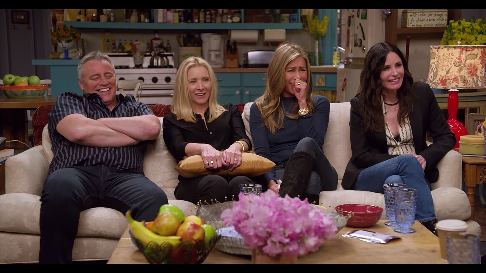
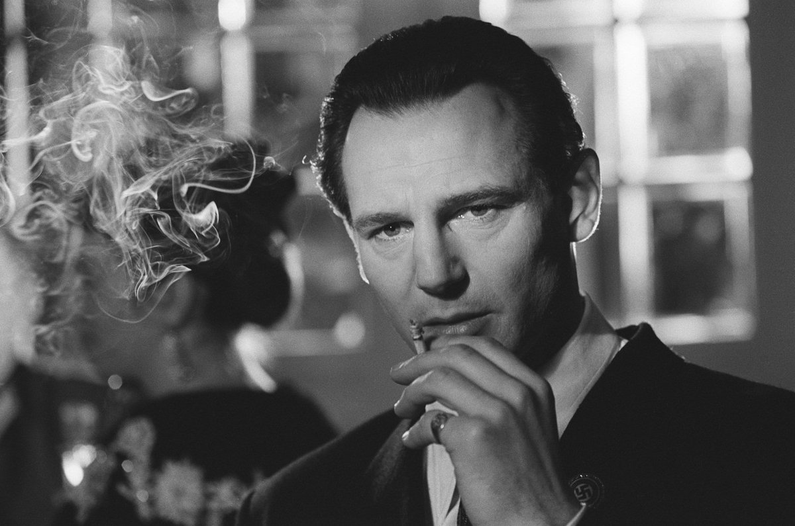

Побег из Шоушенка
Успешный банкир Энди Дюфрейн обвинен в убийстве собственной
жены и ее любовника. Оказавшись в тюрьме под названием Шоушенк, он сталкивается с жестокостью и беззаконием,
царящими по обе
стороны решетки. Каждый, кто попадает в эти стены, становится их рабом до конца жизни. Но Энди, вооруженный живым умом и доброй душой,
отказывается мириться с приговором судьбы и начинает разрабатывать невероятно дерзкий план своего освобождения.
Наркоз
Клай Бересфорд вынужден лечь под нож. Однако в процессе операции на сердце он неожиданно приходит в
себя. Находясь в парализованном состоянии,
будучи не в силах пошевелить ни рукой, ни ногой, он,
тем не менее, чувствует каждое
касание скальпеля к своей плоти…

Астрал
Джош и Рене переезжают со своими детьми в новый дом, но не успевают толком распаковать вещи, как начинаются странные события. Необъяснимо перемещаются
предметы,
в детской звучат странные звуки… Но в настоящий ужас
приходят родители, когда их десятилетний сын Далтон впадает в кому.
Все усилия врачей в больнице помочь мальчику безуспешны.

Гравитация
Доктор Райан Стоун, блестящий специалист в области медицинского инжиниринга, отправляется в свою первую космическую миссию под командованием ветерана
астронавтики
Мэтта Ковальски, для которого этот полет — последний
перед отставкой. Но во время,
казалось бы, рутинной работы за бортом случается катастрофа.
Шаттл уничтожен, а Стоун и
Ковальски остаются совершенно
одни; они находятся в связке друг с другом, и все, что они могут, — это двигаться по орбите в
абсолютно черном пространстве без всякой
связи с Землей и какой-либо
надежды на спасение.

Зеленая миля
Пол Эджкомб - начальник блока смертников в тюрьме «Холодная гора», каждый из узников которого однажды проходит «зеленую милю» по пути к месту казни.
Пол повидал много заключённых и надзирателей за время работы. Однако гигант Джон Коффи, обвинённый в страшном преступлении, стал одним из самых необычных обитателей блока.

Властелин колец: Возвращение короля
Повелитель сил тьмы Саурон направляет свою бесчисленную армию под стены Минас-Тирита, крепости Последней Надежды.
Он предвкушает близкую победу, но именно это мешает ему заметить две крохотные фигурки — хоббитов, приближающихся к Роковой Горе,
где им предстоит уничтожить Кольцо Всевластья.

Интерстеллар
Когда засуха, пыльные бури и вымирание растений приводят человечество к продовольственному кризису, коллектив исследователей и учёных отправляется сквозь червоточину
(которая предположительно соединяет области пространства-времени через большое расстояние) в путешествие, чтобы превзойти прежние ограничения для космических путешествий
человека и найти планету с подходящими для человечества условиями.

Друзья: Воссоединение
Исполнители главных ролей сериала «Друзья» воссоединяются и посещают места съёмок легендарного шоу — квартиру Моники, кофейню Central Perk, знаменитый фонтан — а также
встречаются с актёрами, исполнившими гостевые роли, и рассказывают о забавных случаях со съёмок.

Форрест Гамп
От лица главного героя Форреста Гампа, слабоумного безобидного человека с благородным и открытым сердцем, рассказывается история его необыкновенной жизни.
Фантастическим образом превращается он в известного футболиста, героя войны, преуспевающего бизнесмена. Он становится миллиардером, но остается таким же бесхитростным,
глупым и добрым. Форреста ждет постоянный успех во всем, а он любит девочку, с которой дружил в детстве, но взаимность приходит слишком поздно.

Список Шиндлера
Фильм рассказывает реальную историю загадочного Оскара Шиндлера, члена нацистской партии, преуспевающего фабриканта, спасшего во время Второй мировой войны почти 1200
евреев.